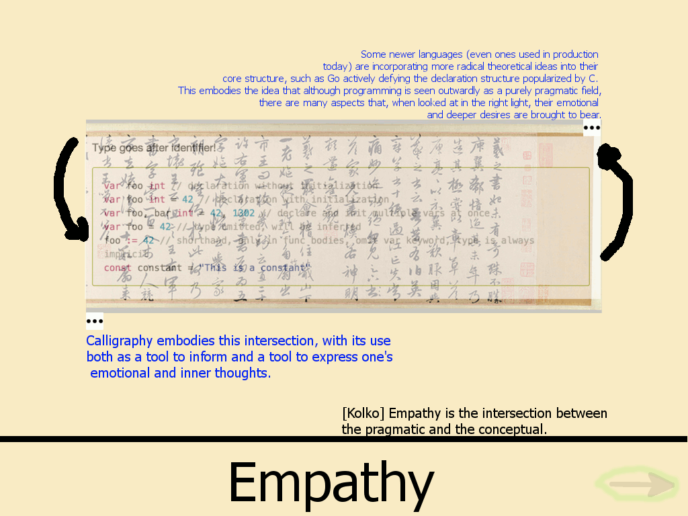

Current layout as of Deliverable 3
Note: Blue text is only blue here to denote that it will expand and contract with clicking of the ellipsis (will be black in actual page).
Also, greyed out arrows (highlighted green) are active once all text has been viewed.
This page is unique in that it matters which source you reached this from as to which of the two overlayed images you will see first. If you arrived from the nonlinearity page, the calligraphy will be shown first.
If you arrived at this page from the clarity page, the code will be shown first.
After the text is viewed for the given image shown and the user shrinks the text away, then the alternate image will be shown (with corresponding ellipsis and text available).
Out Links:
Clicked on continue arrow after all text has been viewed
